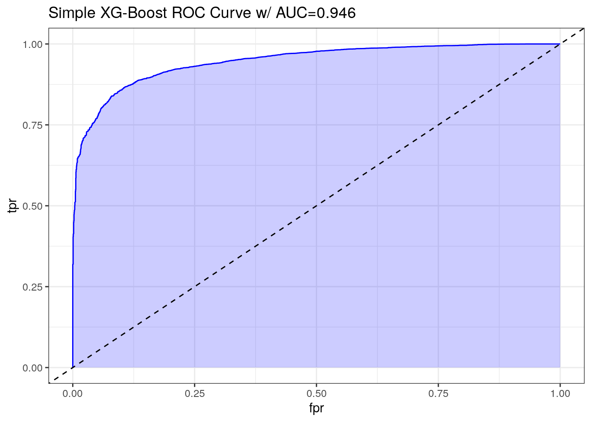
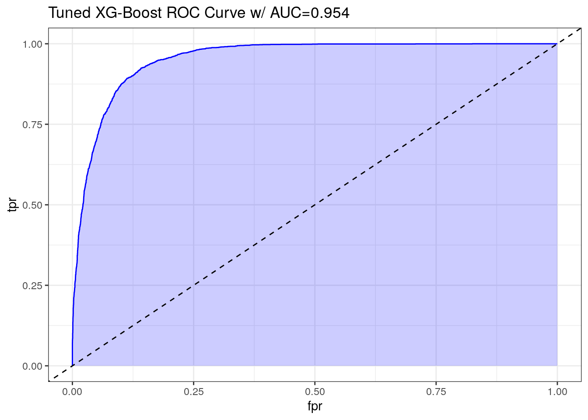

9 XGBoost (XGB)
9.2 Load Data
# Load data
train_xgb <- read.csv('Train Test Set/train_xgb.csv')
test_xgb <- read.csv('Train Test Set/test_xgb.csv')
train_xgb_x <- train_xgb[, !names(train_xgb) %in% 'obesity_leveloverweight']
train_xgb_y <- train_xgb[['obesity_leveloverweight']]
test_xgb_x <- test_xgb[, !names(test_xgb) %in% 'obesity_leveloverweight']
test_xgb_y <- test_xgb[['obesity_leveloverweight']]
# Display statistics
str(train_xgb)## 'data.frame': 10379 obs. of 27 variables:
## $ gender_female : int 1 1 1 0 1 1 1 0 1 1 ...
## $ gender_male : int 0 0 0 1 0 0 0 1 0 0 ...
## $ age : int 24 34 19 19 25 26 23 27 26 20 ...
## $ fam_history_overweight1 : int 1 1 1 1 1 1 1 1 1 0 ...
## $ freq_consumption_hc_food1 : int 1 1 1 1 1 1 0 1 1 0 ...
## $ veg_freq : num 3 2.1 3 3 3 ...
## $ num_meals : num 3 2.98 3 3 3 ...
## $ food_between_meals_frequently : int 0 0 0 0 0 0 0 0 0 1 ...
## $ food_between_meals_never : int 0 0 0 0 0 0 0 0 0 0 ...
## $ food_between_meals_sometimes : int 1 1 1 0 1 1 1 1 1 0 ...
## $ smoke1 : int 0 0 0 0 0 0 0 0 0 0 ...
## $ water_daily : num 2.47 1.96 2.87 3 2.86 ...
## $ caloric_beverages1 : int 0 0 0 1 0 0 0 0 0 0 ...
## $ activity_freq : num 0.167 0.988 1.465 3 0.265 ...
## $ tech_use : num 0.487 0 0.656 0 0.673 ...
## $ alcohol_never : int 0 0 0 0 0 0 0 0 0 0 ...
## $ alcohol_sometimes : int 1 1 1 1 1 1 1 1 1 1 ...
## $ transport_bike : int 0 0 0 0 0 0 0 0 0 0 ...
## $ transport_motorbike : int 0 0 0 0 0 0 0 0 0 0 ...
## $ transport_public_transportation: int 1 0 1 1 1 1 1 1 1 1 ...
## $ transport_walking : int 0 0 0 0 0 0 0 0 0 0 ...
## $ obesity_leveloverweight : int 1 1 1 1 1 1 1 1 1 0 ...
## $ eating_habit_binary : num 2.67 2.36 2.67 2.67 2.67 ...
## $ physical_activity_binary : num -0.32 0.988 0.809 3 -0.408 ...
## $ age_group_young_adult : int 1 1 1 1 1 1 1 1 1 1 ...
## $ age_group_adult : int 0 0 0 0 0 0 0 0 0 0 ...
## $ age_group_senior : int 0 0 0 0 0 0 0 0 0 0 ...## gender_female gender_male age fam_history_overweight1
## Min. :0.0000 Min. :0.0000 Min. :14.00 Min. :0.0000
## 1st Qu.:0.0000 1st Qu.:0.0000 1st Qu.:20.00 1st Qu.:1.0000
## Median :1.0000 Median :0.0000 Median :23.00 Median :1.0000
## Mean :0.5079 Mean :0.4921 Mean :23.81 Mean :0.8177
## 3rd Qu.:1.0000 3rd Qu.:1.0000 3rd Qu.:26.00 3rd Qu.:1.0000
## Max. :1.0000 Max. :1.0000 Max. :61.00 Max. :1.0000
## freq_consumption_hc_food1 veg_freq num_meals
## Min. :0.0000 Min. :1.000 Min. :1.000
## 1st Qu.:1.0000 1st Qu.:2.000 1st Qu.:3.000
## Median :1.0000 Median :2.445 Median :3.000
## Mean :0.9166 Mean :2.452 Mean :2.758
## 3rd Qu.:1.0000 3rd Qu.:3.000 3rd Qu.:3.000
## Max. :1.0000 Max. :3.000 Max. :4.000
## food_between_meals_frequently food_between_meals_never
## Min. :0.0000 Min. :0.00000
## 1st Qu.:0.0000 1st Qu.:0.00000
## Median :0.0000 Median :0.00000
## Mean :0.1212 Mean :0.01253
## 3rd Qu.:0.0000 3rd Qu.:0.00000
## Max. :1.0000 Max. :1.00000
## food_between_meals_sometimes smoke1 water_daily
## Min. :0.0000 Min. :0.00000 Min. :1.000
## 1st Qu.:1.0000 1st Qu.:0.00000 1st Qu.:1.796
## Median :1.0000 Median :0.00000 Median :2.000
## Mean :0.8446 Mean :0.01224 Mean :2.029
## 3rd Qu.:1.0000 3rd Qu.:0.00000 3rd Qu.:2.536
## Max. :1.0000 Max. :1.00000 Max. :3.000
## caloric_beverages1 activity_freq tech_use alcohol_never
## Min. :0.00000 Min. :0.00000 Min. :0.0000 Min. :0.0000
## 1st Qu.:0.00000 1st Qu.:0.00705 1st Qu.:0.0000 1st Qu.:0.0000
## Median :0.00000 Median :1.00000 Median :0.5740 Median :0.0000
## Mean :0.03276 Mean :0.98097 Mean :0.6147 Mean :0.2461
## 3rd Qu.:0.00000 3rd Qu.:1.58652 3rd Qu.:1.0000 3rd Qu.:0.0000
## Max. :1.00000 Max. :3.00000 Max. :2.0000 Max. :1.0000
## alcohol_sometimes transport_bike transport_motorbike
## Min. :0.0000 Min. :0.000000 Min. :0.000000
## 1st Qu.:0.0000 1st Qu.:0.000000 1st Qu.:0.000000
## Median :1.0000 Median :0.000000 Median :0.000000
## Mean :0.7289 Mean :0.001734 Mean :0.001927
## 3rd Qu.:1.0000 3rd Qu.:0.000000 3rd Qu.:0.000000
## Max. :1.0000 Max. :1.000000 Max. :1.000000
## transport_public_transportation transport_walking obesity_leveloverweight
## Min. :0.0000 Min. :0.00000 Min. :0.0000
## 1st Qu.:1.0000 1st Qu.:0.00000 1st Qu.:0.0000
## Median :1.0000 Median :0.00000 Median :1.0000
## Mean :0.8056 Mean :0.02226 Mean :0.7262
## 3rd Qu.:1.0000 3rd Qu.:0.00000 3rd Qu.:1.0000
## Max. :1.0000 Max. :1.00000 Max. :1.0000
## eating_habit_binary physical_activity_binary age_group_young_adult
## Min. :1.000 Min. :-2.0000 Min. :0.0000
## 1st Qu.:2.309 1st Qu.:-0.2790 1st Qu.:1.0000
## Median :2.333 Median : 0.2867 Median :1.0000
## Mean :2.375 Mean : 0.3662 Mean :0.9019
## 3rd Qu.:2.667 3rd Qu.: 1.0000 3rd Qu.:1.0000
## Max. :3.000 Max. : 3.0000 Max. :1.0000
## age_group_adult age_group_senior
## Min. :0.00000 Min. :0.000000
## 1st Qu.:0.00000 1st Qu.:0.000000
## Median :0.00000 Median :0.000000
## Mean :0.05222 Mean :0.003276
## 3rd Qu.:0.00000 3rd Qu.:0.000000
## Max. :1.00000 Max. :1.000000## gender_female gender_male age fam_history_overweight1
## 1 1 0 24 1
## 2 1 0 34 1
## 3 1 0 19 1
## 4 0 1 19 1
## 5 1 0 25 1
## 6 1 0 26 1
## freq_consumption_hc_food1 veg_freq num_meals food_between_meals_frequently
## 1 1 3.000000 3.000000 0
## 2 1 2.103335 2.977909 0
## 3 1 3.000000 3.000000 0
## 4 1 3.000000 3.000000 0
## 5 1 3.000000 3.000000 0
## 6 1 3.000000 3.000000 0
## food_between_meals_never food_between_meals_sometimes smoke1 water_daily
## 1 0 1 0 2.472903
## 2 0 1 0 1.964435
## 3 0 1 0 2.865590
## 4 0 0 0 3.000000
## 5 0 1 0 2.863513
## 6 0 1 0 1.347559
## caloric_beverages1 activity_freq tech_use alcohol_never alcohol_sometimes
## 1 0 0.167086 0.486868 0 1
## 2 0 0.987521 0.000000 0 1
## 3 0 1.464674 0.655571 0 1
## 4 1 3.000000 0.000000 0 1
## 5 0 0.264831 0.673210 0 1
## 6 0 0.217455 0.625350 0 1
## transport_bike transport_motorbike transport_public_transportation
## 1 0 0 1
## 2 0 0 0
## 3 0 0 1
## 4 0 0 1
## 5 0 0 1
## 6 0 0 1
## transport_walking obesity_leveloverweight eating_habit_binary
## 1 0 1 2.666667
## 2 0 1 2.360415
## 3 0 1 2.666667
## 4 0 1 2.666667
## 5 0 1 2.666667
## 6 0 1 2.666667
## physical_activity_binary age_group_young_adult age_group_adult
## 1 -0.319782 1 0
## 2 0.987521 1 0
## 3 0.809103 1 0
## 4 3.000000 1 0
## 5 -0.408379 1 0
## 6 -0.407895 1 0
## age_group_senior
## 1 0
## 2 0
## 3 0
## 4 0
## 5 0
## 6 09.3 Model XGB
9.3.1 Simple XGB
# Set seed for reproducibility
set.seed(12345)
# Build a model
model_xgb <- xgboost(
data = as.matrix(train_xgb_x),
label = train_xgb_y,
nrounds = 10,
objective = 'binary:logistic'
)## Length Class Mode
## handle 1 xgb.Booster.handle externalptr
## raw 45397 -none- raw
## niter 1 -none- numeric
## evaluation_log 2 data.table list
## call 14 -none- call
## params 2 -none- list
## callbacks 2 -none- list
## feature_names 26 -none- character
## nfeatures 1 -none- numeric9.3.2 Tuned XGB
# Set seed for reproducibility
set.seed(12345)
# Set up control parameters
ctrl <- trainControl(
method = 'cv',
number = 10,
verboseIter = TRUE
)
# Define the parameter grid
grid <- expand.grid(
nrounds = c(100, 250, 500),
max_depth = c(3, 6, 9),
eta = c(0.01, 0.1, 0.3),
gamma = 0,
colsample_bytree = 1,
min_child_weight=1,
subsample=1
)# Tune the model
xgb_tuned <- train(
x = as.matrix(train_xgb_x),
y = as.factor(train_xgb_y),
method = 'xgbTree',
trControl = ctrl,
tuneGrid = grid
)
# Retrieve best model
model_xgb_tuned <- xgb_tuned$finalModel## eXtreme Gradient Boosting
##
## 10379 samples
## 26 predictor
## 2 classes: '0', '1'
##
## No pre-processing
## Resampling: Cross-Validated (10 fold)
## Summary of sample sizes: 9340, 9341, 9341, 9341, 9341, 9342, ...
## Resampling results across tuning parameters:
##
## eta max_depth nrounds Accuracy Kappa
## 0.01 3 100 0.8582716 0.6212264
## 0.01 3 250 0.8732044 0.6702596
## 0.01 3 500 0.8791770 0.6906437
## 0.01 6 100 0.8793702 0.6903753
## 0.01 6 250 0.8841874 0.7043753
## 0.01 6 500 0.8918951 0.7281252
## 0.01 9 100 0.8830331 0.7033199
## 0.01 9 250 0.8865016 0.7133600
## 0.01 9 500 0.8901627 0.7241590
## 0.10 3 100 0.8868853 0.7137084
## 0.10 3 250 0.8907388 0.7245800
## 0.10 3 500 0.8895836 0.7218751
## 0.10 6 100 0.8935340 0.7327224
## 0.10 6 250 0.8932451 0.7322391
## 0.10 6 500 0.8892951 0.7227740
## 0.10 9 100 0.8917039 0.7287168
## 0.10 9 250 0.8867900 0.7156515
## 0.10 9 500 0.8840919 0.7091133
## 0.30 3 100 0.8908350 0.7240474
## 0.30 3 250 0.8915106 0.7268474
## 0.30 3 500 0.8915110 0.7267655
## 0.30 6 100 0.8930530 0.7322671
## 0.30 6 250 0.8866936 0.7158573
## 0.30 6 500 0.8834179 0.7072085
## 0.30 9 100 0.8862123 0.7142853
## 0.30 9 250 0.8822621 0.7038175
## 0.30 9 500 0.8786002 0.6938026
##
## Tuning parameter 'gamma' was held constant at a value of 0
## Tuning
##
## Tuning parameter 'min_child_weight' was held constant at a value of 1
##
## Tuning parameter 'subsample' was held constant at a value of 1
## Accuracy was used to select the optimal model using the largest value.
## The final values used for the model were nrounds = 100, max_depth = 6, eta
## = 0.1, gamma = 0, colsample_bytree = 1, min_child_weight = 1 and subsample = 1.## Length Class Mode
## handle 1 xgb.Booster.handle externalptr
## raw 335280 -none- raw
## niter 1 -none- numeric
## call 5 -none- call
## params 8 -none- list
## callbacks 1 -none- list
## feature_names 26 -none- character
## nfeatures 1 -none- numeric
## xNames 26 -none- character
## problemType 1 -none- character
## tuneValue 7 data.frame list
## obsLevels 2 -none- character
## param 0 -none- list9.4 Evaluate XGB
9.4.1 Simple XGB
# Make a prediction
prediction_xgb_probability <- predict(model_xgb, as.matrix(test_xgb_x))
prediction_xgb <- ifelse(prediction_xgb_probability > 0.5, 1, 0)
summary(prediction_xgb_probability)## Min. 1st Qu. Median Mean 3rd Qu. Max.
## 0.03182 0.46929 0.91454 0.72143 0.96696 0.97641# Perform confusion matrix
cm_xgb <- confusionMatrix(
as.factor(prediction_xgb),
as.factor(test_xgb_y),
positive = '1'
)
cm_xgb## Confusion Matrix and Statistics
##
## Reference
## Prediction 0 1
## 0 2128 559
## 1 635 7057
##
## Accuracy : 0.885
## 95% CI : (0.8787, 0.891)
## No Information Rate : 0.7338
## P-Value [Acc > NIR] : < 2e-16
##
## Kappa : 0.7029
##
## Mcnemar's Test P-Value : 0.02997
##
## Sensitivity : 0.9266
## Specificity : 0.7702
## Pos Pred Value : 0.9174
## Neg Pred Value : 0.7920
## Prevalence : 0.7338
## Detection Rate : 0.6799
## Detection Prevalence : 0.7411
## Balanced Accuracy : 0.8484
##
## 'Positive' Class : 1
## Based on the confusion matrix, we observe that the model achieves an accuracy of 0.885, sensitivity of 0.9266, and a Kappa coefficient of 0.7029. We will assess these results towards the conclusion of the assignment when we have completed stacked models.
# Plot AUC
pred <- ROCR::prediction(prediction_xgb_probability, test_xgb_y)
perf <- ROCR::performance(pred, measure = "tpr", x.measure = "fpr")
auc <- ROCR::performance(pred, measure="auc")
auc <- round(auc@y.values[[1]],3)
roc.data <- data.frame(fpr=unlist(perf@x.values),
tpr=unlist(perf@y.values),
model="GLM")
ggplot(roc.data, aes(x=fpr, ymin=0, ymax=tpr)) +
geom_ribbon(alpha=0.2, fill = "blue") +
geom_line(aes(y=tpr), col = "blue") +
geom_abline(intercept = 0, slope = 1, lty = "dashed") +
labs(title = paste0("Simple XG-Boost ROC Curve w/ AUC=", auc)) +
theme_bw()
9.4.2 Tuned XGB
# Make a prediction
prediction_xgb_tuned_probability <- predict(model_xgb_tuned, as.matrix(test_xgb_x))
prediction_xgb_tuned <- ifelse(prediction_xgb_tuned_probability > 0.5, 0, 1)
summary(prediction_xgb_tuned_probability)## Min. 1st Qu. Median Mean 3rd Qu. Max.
## 0.0002856 0.0034169 0.0383439 0.2662891 0.5447414 0.9967414# Perform confusion matrix
cm_xgb_tuned <- confusionMatrix(
as.factor(prediction_xgb_tuned),
as.factor(test_xgb_y),
positive = '1'
)
cm_xgb_tuned## Confusion Matrix and Statistics
##
## Reference
## Prediction 0 1
## 0 2204 552
## 1 559 7064
##
## Accuracy : 0.893
## 95% CI : (0.8869, 0.8988)
## No Information Rate : 0.7338
## P-Value [Acc > NIR] : <2e-16
##
## Kappa : 0.7258
##
## Mcnemar's Test P-Value : 0.8571
##
## Sensitivity : 0.9275
## Specificity : 0.7977
## Pos Pred Value : 0.9267
## Neg Pred Value : 0.7997
## Prevalence : 0.7338
## Detection Rate : 0.6806
## Detection Prevalence : 0.7345
## Balanced Accuracy : 0.8626
##
## 'Positive' Class : 1
## Based on the confusion matrix, we observe that the model achieves an accuracy of 0.893, sensitivity of 0.9275, and a Kappa coefficient of 0.7258. We will assess these results towards the conclusion of the assignment when we have completed stacked models.
# Plot AUC
pred <- ROCR::prediction(prediction_xgb_tuned_probability, 1-test_xgb_y)
perf <- ROCR::performance(pred, measure = "tpr", x.measure = "fpr")
auc <- ROCR::performance(pred, measure="auc")
auc <- round(auc@y.values[[1]],3)
roc.data <- data.frame(fpr=unlist(perf@x.values),
tpr=unlist(perf@y.values),
model="GLM")
ggplot(roc.data, aes(x=fpr, ymin=0, ymax=tpr)) +
geom_ribbon(alpha=0.2, fill = "blue") +
geom_line(aes(y=tpr), col = "blue") +
geom_abline(intercept = 0, slope = 1, lty = "dashed") +
labs(title = paste0("Tuned XG-Boost ROC Curve w/ AUC=", auc)) +
theme_bw()